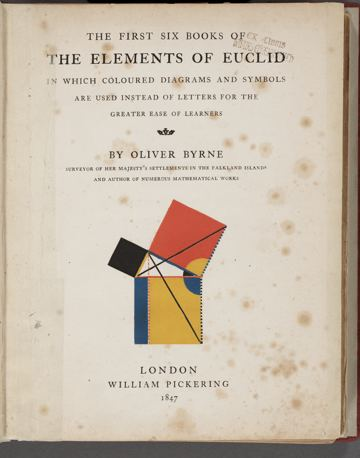
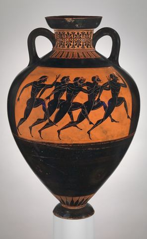

Reality Check · branding round 3 · abstract
Six abstract Socratic directions
No statues this time. Every picture is drawn in code from something real in the Socratic world: Euclid's diagrams, Greek pottery, Plato's cave, green marble, the Ionic column and Euler's logic circles. Each direction shows a splash screen and the democracy result (felt 7 of 8, scored 5), and each draws the calibration gap its own way.
The meanings stay fixed across all six: yellow or ochre is always hints and Help, red or terracotta is always the overconfidence gap, and one earned color marks a part done with no help.
3AByrne's Euclid
Oliver Byrne's 1847 Euclid swapped letters for colored shapes, made, as its title page says, "for the greater ease of learners." Primary red, yellow and blue on cream, with heavy black lines. The splash draws Euclid's first proposition: two circles that build a triangle.

Reality Check
Learn to question what you think you know.
3BBlack-Figure
Athenian pottery: black glaze on orange clay, meander bands, and the amphora. Prize amphorae, filled with olive oil, went to winners at the Panathenaic Games, so the jar is our reward symbol. The label is the Delphic maxim ΓΝΩΘΙ ΣΑΥΤΟΝ, "know thyself."

Reality Check
Learn to question what you think you know.
3CPlato's Cave
From Plato's Republic, Book VII: prisoners take shadows for the real thing until one walks out into the daylight. The app is that walk. The splash is the cave mouth, a beam of light, and you, casting a shadow.
Reality Check
Learn to question what you think you know.
3DVerde & Gold
Verde antico, the green stone from Thessaly that Romans and Byzantines used for columns. The veins are generated, so no two screens repeat, with fine gold rings like an inlaid floor. Rich, calm, and unlike any education app.
Reality
Check
Learn to question what you think you know.
3EIonic Order
The top of an Ionic column: two scrolls (volutes) that spiral inward, over a fluted shaft. Limestone, ink and a touch of gold leaf in each scroll's eye. The spiral fits the app: each question turns you closer to the center of a concept.
Reality Check
Learn to question what you think you know.
3FEuler Circles
Leonhard Euler drew circles like these in 1768 to teach logic, and they map our four moves exactly. The splash is the worked example: planet sits inside opaque celestial bodies (the bigger group), with rocky and giant planets as its types, and star outside (what it isn't).
Reality Check
Learn to question what you think you know.
Contrast check
WCAG 2 ratios for the text pairs each direction uses, computed from the same token data that colors the screens. AA needs 4.5:1 for text.
| Direction | Text | Soft text | Button | Hint | Gap | Alone tag | Numbers on weights |
|---|
Sources and credits
- Every picture on the phone screens is drawn in code for this board: no stock or AI images.
- Oliver Byrne, The First Six Books of the Elements of Euclid, 1847, title page (public domain, via Wikimedia Commons).
- Terracotta Panathenaic prize amphora, The Metropolitan Museum of Art (CC0, via Wikimedia Commons).
- Laurel icon in the "Alone" tag: game-icons.net by Lorc (CC BY 3.0).